Adicionar Dado Estático
Para adicionar um novo dado estático é necessário ter um projeto ativo. No menu de opções selecione “ Dados Estáticos” para que a lista de dados disponíveis seja apresentada na área de trabalho. Clique no botão “ + ” para adicionar novo dado. Utilize o botão “Salvar” para salvar o dado estático. Não é permitido nomes de dados em duplicidade. Botão “Cancelar” volta à tela anterior sem salvar o dado. A Figura 2.25 mostra a área de trabalho para adicionar novo dado estático. Detalhes de cada campo a seguir.
Dados Estáticos” para que a lista de dados disponíveis seja apresentada na área de trabalho. Clique no botão “ + ” para adicionar novo dado. Utilize o botão “Salvar” para salvar o dado estático. Não é permitido nomes de dados em duplicidade. Botão “Cancelar” volta à tela anterior sem salvar o dado. A Figura 2.25 mostra a área de trabalho para adicionar novo dado estático. Detalhes de cada campo a seguir.
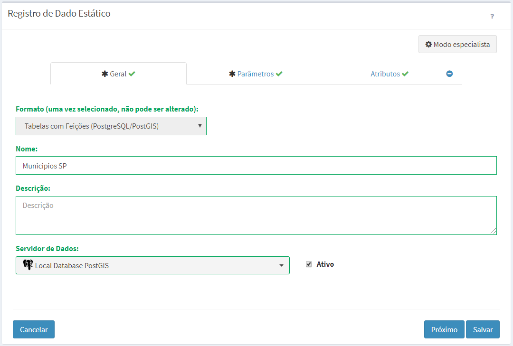
Figura 2.25 – Módulo de Administração: Adição de dado estático
Registro de Dado Estático - Geral:
- Formato: Escolha o tipo entre Tabelas com Feições (PostgreSQL/PostGIS), Visões de Tabelas (PostgreSQL/PostGIS), Arquivos Matriciais (GeoTIFF) ou Arquivos Vetoriais (ESRI Shapefile). Dependendo do tipo escolhido alguns parâmetros específicos serão apresentados para preenchimento. IMPORTANTE: Uma vez escolhido não pode ser alterado, a menos que saia da edição e retorne.
- Nome: Defina o nome do dado estático (campo obrigatório para passar para os demais itens). O tamanho máximo do nome é de 100 caracteres. Não é permitido nomes duplicados.
- Descrição: Campo não obrigatório para descrição do dado estático. O tamanho máximo da senha é de 250 caracteres.
- Servidor de Dados: Escolha o servidor de dados que receberá o dado a ser transferido ou disponível para escolher. As opções disponíveis dependem do formato escolhido acima. Se o formato escolhido for arquivos vetoriais ou matriciais somente servidores do tipo ARQUIVO estarão disponíveis. Se o formato escolhido for tabelas ou visões de tabelas somente servidores do tipo PostGIS estarão disponíveis.
- Ativo: Botão ativo permite utilizar o dado estático. Botão desmarcado dado não poderá ser utilizado.
Registro de Dado Estático – Parâmetros:
se formato “Tabelas com Feições (PostgreSQL/PostGIS)
- Escolher tabela no banco: Use esta opção caso a tabela a ser escolhida como dado estático está disponível em servidor de banco de dados escolhido na aba Geral.
- Transferência de arquivo para criar tabela: Use esta opção caso a tabela a ser criada como dado estático está disponível em um arquivo Shape-File a ser transferido para o servidor de banco de dados escolhido na aba Geral.
- Nome da Tabela: Nome da tabela disponível no servidor de banco de dados PostGIS se opção acima foi escolher. Ao clicar sobre o campo em branco a lista de tabelas será apresentada, ou ao digitar as primeiras letras serão apresentadas as tabelas com letras digitadas. Se opção acima for a transferência de arquivo, digite o nome de uma tabela quem não exista na lista. Na etapa de transferência será verificada e existência da tabela.
Se opção acima foi de transferir um arquivo Shape-file para criar a tabela no banco, isso poderá ser feito a partir de qualquer computador onde o arquivo estiver disponível. Use o botão abaixo para selecionar o arquivo com suas propriedades.
- Transferir Shapefile ...: Utilize este botão para efetuar a transferência de arquivos Shape-File (mapas vetoriais) para servidores de banco de dados do tipo PostgreSQL/PostGIS. Obrigatório o preenchimento do nome da tabela acima. Este botão dará acesso a janela da Figura 2.26 para proceder com a carga do arquivo. Note que o arquivo *zip não pode ultrapassar 300 MBytes.
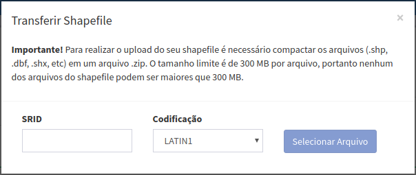
Figura 2.26 – Módulo de Administração: Transferência de arquivo Shape-file para servidor.
- SRID: Digite o valor numérico dos parâmetros de projeção e datum correspondente ao arquivo Shapefile. Veja os principais valores utilizados no anexo A1.
- Codificação: Escolha a codificação de caracteres LATIN1 ou UTF8 do arquivo Shapefile correspondente.
- Selecionar Arquivo: Utilize este botão para selecionar o arquivo Shapefile a ser transferido para o banco de dados. Aguarde pela mensagem “Shapefile importado com sucesso!”.
Registro de Dado Estático – Parâmetros:
se formato “Arquivos Matriciais (GeoTIFF)” ou “Arquivos Vetoriais (ESRI Shapefile)
- Escolher arquivo no servidor de dados: Use esta opção caso o arquivo vetorial (em Shape-File) ou matricial (em GeoTiff) a ser utilizado como dado estático disponível em servidor de arquivos escolhido na aba Geral.
- Transferência de arquivo para servidor de dados: Use esta opção caso o arquivo vetorial (em Shape-File) ou matricial (em GeoTiff) a ser utilizado como dado estático a ser transferido para o servidor de arquivos escolhido na aba Geral.
- Nome do Arquivo (se opção acima for Escolher Arquivo): Nome do arquivo estático a ser escolhido. Se o arquivo estiver em sub-diretórios definido a partir do caminho informado na definição do servidor, acrescente estes subdiretórios na frente do nome do arquivo (por exemplo: maps/geo/vunerabilidade_geo.tif ou maps/shape/rodovias.shp ). Para facilitar a escolha pelo sistema de arquivos utilize o botão 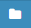.
- Nome da pasta (se opção acima for Transferir Arquivo): Nome da pasta para onde será transferido o arquivo. Se o nome da pasta (ou diretório) não for encontrada ela será criada. Para facilitar a escolha de pastas disponíveis pelo sistema de arquivos utilize o botão . É possível escolher parte das pastas existentes e acrescentar nomes de outras a serem criadas.
- Transferir Shapefile ...: Utilize este botão para efetuar a transferência de arquivos Shape-File (mapas vetoriais) para servidores de arquivos. Este botão dará acesso a janela da Figura 2.27 apresentada acima para proceder com a carga do arquivo. Note que o arquivo *zip não pode ultrapassar 300 MBytes. A projeção do mapa deve estar definida no arquivo *.prj do Shape-File. A codificação deve ser UTF8.
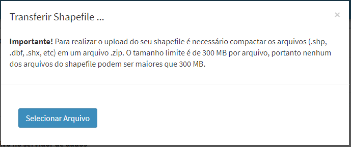
Figura 2.28 – Módulo de Administração: Transferência de arquivo Shape-File para servidor de arquivo.
- Transferir GeoTIFF ...: Utilize este botão para efetuar a transferência de arquivos Geotiff para servidores do tipo arquivo. Este botão dará acesso a janela da Figura 2.28 para proceder com a carga do arquivo. Note que o arquivo *tif não pode ultrapassar 300 MBytes.
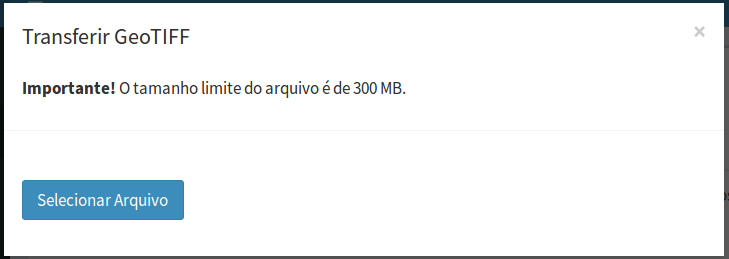
Figura 2.28 – Módulo de Administração: Transferência de arquivo Geotiff para servidor de arquivo.
- Selecionar Arquivo: Utilize este botão para selecionar o arquivo Geotiff a ser transferido para o servidor de arquivos. Aguarde pela mensagem “Geotiff importado com sucesso!”.
Registro de Dado Estático – Parâmetros:
se formato “Visões de Tabelas (PostgreSQL/PostGIS)”
- Escolher visão no banco de dados: Use esta opção para selecionar uma visão previamente definida no banco de dados para ser utilizada como dado estático. O servidor de banco de dados PostGIS deve ter sido escolhido na aba Geral.
- Criar visão a partir de tabela: Use esta opção para criar ou atualizar uma visão a partir de uma tabela. Esta opção está limitada a uma única tabela, a escolha dos atributos dessa tabela e filtros em função da tabela escolhida. Se necessário utilizar mais de uma tabela para criar uma visão utilize os recursos do banco como execução do expressões em SQL.
- Nome da Visão: Nome da visão disponível no servidor de banco de dados PostGIS. Ao clicar sobre o campo em branco a lista de visões será apresentada, ou ao digitar as primeiras letras serão apresentadas as visões com letras digitadas. Se opção de criar a visão digite o nome de uma a ser criada ou atualizada.
- Nome da tabela: Nome da tabela a ser utilizada. Clique e escolha a tabela na lista.
- Nome da visão a ser criada: Nome da visão a ser criada.
- Atributo de entrada / Atributo de saída: Lista de atributos da tabela de origem a ser utilizada. Utilize os botões 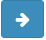, 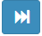 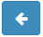 ou 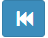 para transferir os atributos da lista de entrada para saída. Note que os atributos que contém a geometria e a chave primária serão automaticamente selecionados para lista de saída.
Para definir um filtro utilize os recursos a segui:
- Atributo: Clique para escolher o atributo da tabela de origem escolhida acima.
- Operador: Clique e escolha o operador.
- Valor: Digite ou escolha o valor do atributo escolhido.
- 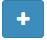: Utilize este botão para inserir os campos definidos acima no campo Filtro.
- Query Builder: Área utilizada para mostrar a cláusula “where” de uma expressão de consulta em SQL. Esta área é editável caso o usuário tenha conhecimento da sintaxe de uma consulta em SQL.
- Validar: Verifica se a expressão criada acima é válida.
Registro de Dado Estático – Atributos  :
:
Utilize esta aba para definir quais e com que pseudônimos os atributos devem ser apresentados no Módulo de Monitoramento. Esta aba é utilizada somente para dado estático armazenado na forma de tabelas no servidor de banco de dados PostGIS. Esta opção não é obrigatória e se não utilizada todos atributos serão apresentados com os nomes reais definidos em cada tabela. Utilize o sinal  para habilitar a alteração nos atributos. Note que por padrão todos os campos aparecem selecionados na coluna “Visível”. Efetue as alterações marcando ou não os atributos a serem apresentados. Utilize o sinal na aba para cancelar qualquer alteração feita nos atributos. Todos os atributos voltam a ser apresentados com os nomes reais (Figura 2.29).
para habilitar a alteração nos atributos. Note que por padrão todos os campos aparecem selecionados na coluna “Visível”. Efetue as alterações marcando ou não os atributos a serem apresentados. Utilize o sinal na aba para cancelar qualquer alteração feita nos atributos. Todos os atributos voltam a ser apresentados com os nomes reais (Figura 2.29).
- Nome do Atributo: Nome real do atributo na tabela do banco de dados.
- Visível: Botão de seleção. Se marcado atributo será apresentado, caso contrário não será apresentado.
- Psedônimo: Nome que será utilizado para mostrar o atributo. Depende da opção acima estar marcada como visível.
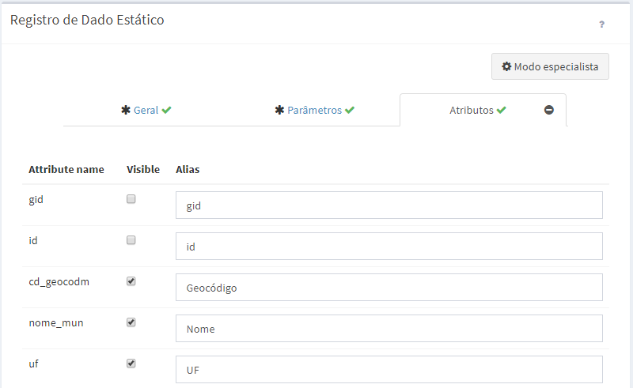
Figura 2.29 – Módulo de Administração: Atributos de dados estáticos.